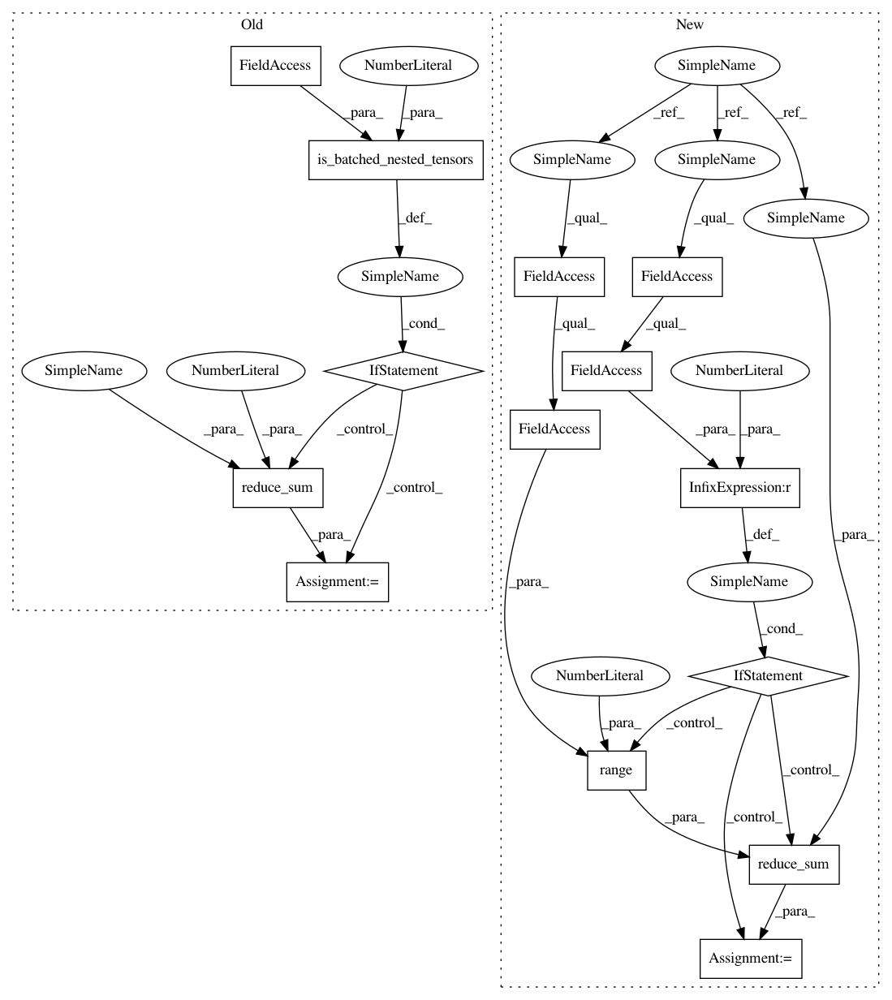

6f3a917e94edf2b96e4c151d698495799be5c9de,tf_agents/agents/sac/sac_agent.py,SacAgent,alpha_loss,#SacAgent#Any#Any#,534
Before Change
else:
alpha_loss = (tf.exp(self._log_alpha) * entropy_diff)
if nest_utils.is_batched_nested_tensors(
time_steps, self.time_step_spec, num_outer_dims=2):
// Sum over the time dimension.
alpha_loss = tf.reduce_sum(input_tensor=alpha_loss, axis=1)
else:
alpha_loss = tf.expand_dims(alpha_loss, 0)
agg_loss = common.aggregate_losses(
per_example_loss=alpha_loss, sample_weight=weights)
alpha_loss = agg_loss.total_loss
After Change
unused_actions, log_pi = self._actions_and_log_probs(time_steps)
entropy_diff = tf.stop_gradient(-log_pi - self._target_entropy)
if self._use_log_alpha_in_alpha_loss:
alpha_loss = (self._log_alpha * entropy_diff)
else:
alpha_loss = (tf.exp(self._log_alpha) * entropy_diff)
if alpha_loss.shape.rank > 1:
// Sum over the time dimension.
alpha_loss = tf.reduce_sum(
alpha_loss, axis=range(1, alpha_loss.shape.rank))
agg_loss = common.aggregate_losses(
per_example_loss=alpha_loss, sample_weight=weights)
alpha_loss = agg_loss.total_loss
In pattern: SUPERPATTERN
Frequency: 3
Non-data size: 14
Instances
Project Name: tensorflow/agents
Commit Name: 6f3a917e94edf2b96e4c151d698495799be5c9de
Time: 2020-06-26
Author: summeryue@google.com
File Name: tf_agents/agents/sac/sac_agent.py
Class Name: SacAgent
Method Name: alpha_loss
Project Name: tensorflow/agents
Commit Name: 6f3a917e94edf2b96e4c151d698495799be5c9de
Time: 2020-06-26
Author: summeryue@google.com
File Name: tf_agents/agents/sac/sac_agent.py
Class Name: SacAgent
Method Name: alpha_loss
Project Name: tensorflow/agents
Commit Name: 6f3a917e94edf2b96e4c151d698495799be5c9de
Time: 2020-06-26
Author: summeryue@google.com
File Name: tf_agents/agents/sac/sac_agent.py
Class Name: SacAgent
Method Name: actor_loss
Project Name: tensorflow/agents
Commit Name: 6f3a917e94edf2b96e4c151d698495799be5c9de
Time: 2020-06-26
Author: summeryue@google.com
File Name: tf_agents/agents/sac/sac_agent.py
Class Name: SacAgent
Method Name: critic_loss